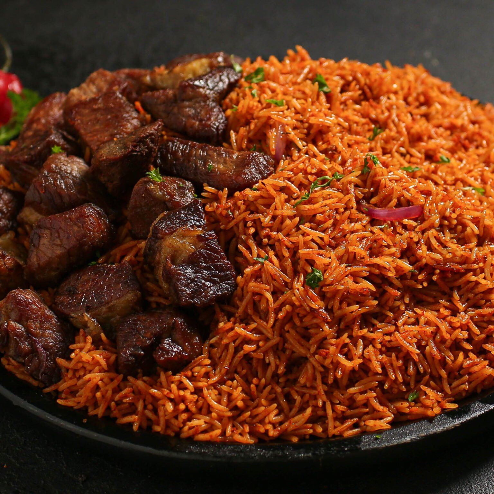
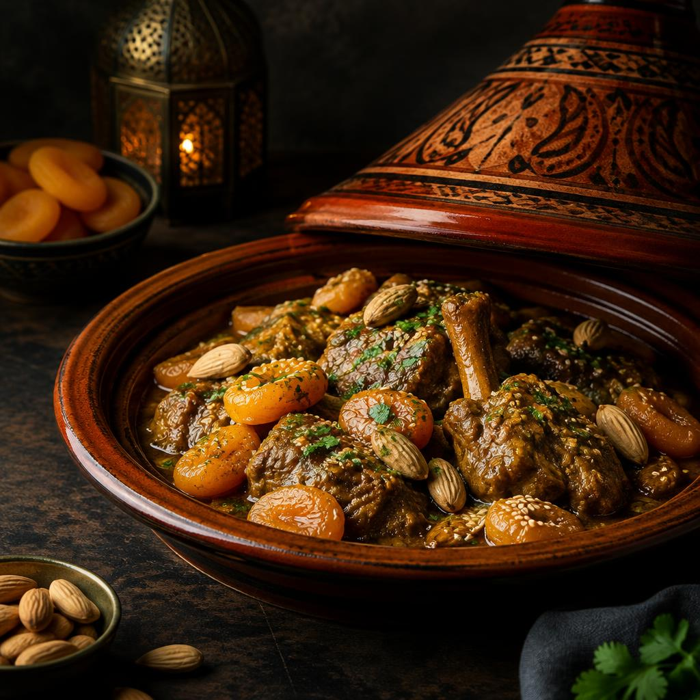
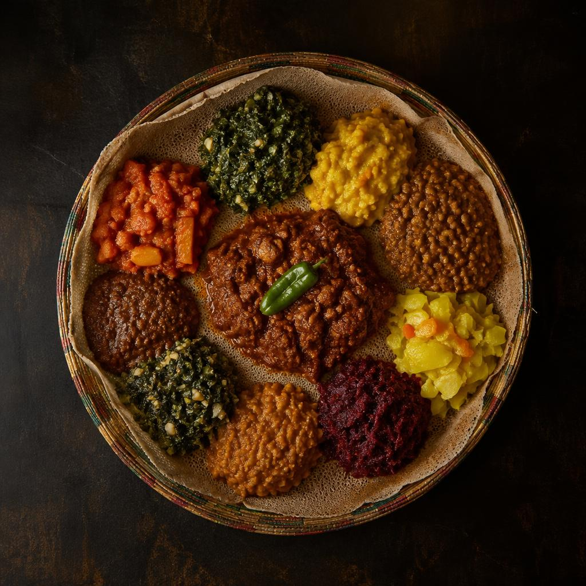

Culinary regions
Three regions, a thousand flavours

01
West Africa
From Dakar to Lagos, West African kitchens are built on rice, yams, cassava and plantain. Stews are slow-simmered in rich tomato and pepper bases, and meals are shared from a common bowl.
Scotch bonnet
Grains of paradise
Dawadawa
Uda pepper
Explore West Africa

02
North Africa
Stretching from Morocco to Egypt, North African food blends Berber, Arab, Andalusian and Ottoman influences. Couscous is the beloved staple and sweet-savoury combinations define the cuisine.
Ras el hanout
Saffron
Cumin
Harissa
Explore North Africa

03
East Africa
From the Ethiopian highlands to the Swahili coast and the hills of Rwanda, East African food mixes indigenous grains with spices brought by Indian Ocean trade routes.
Berbere
Cardamom
Cloves
Mitmita
Explore East Africa